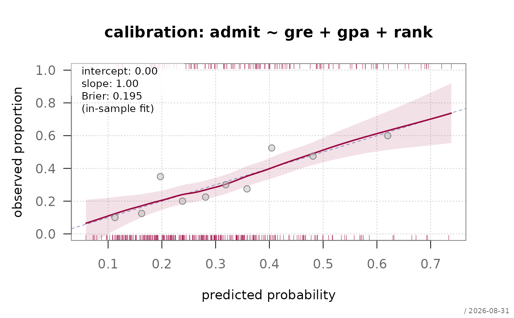
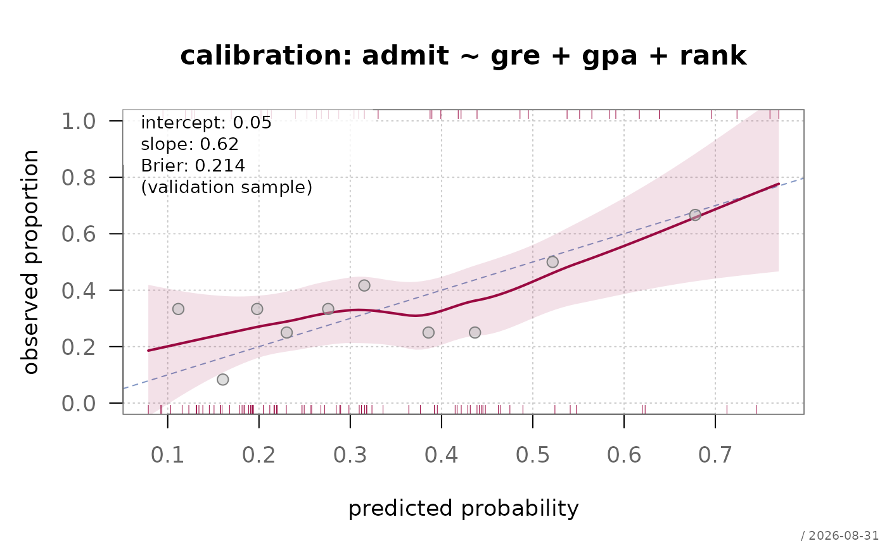

Plots observed event rates against predicted probabilities, with a smoother and its confidence band, the diagonal of perfect calibration, and the calibration intercept and slope. Where a goodness-of-fit test returns a single p-value, this shows where and by how much the predictions are off.
Usage
plotCalibration(
x,
newdata = NULL,
main = NULL,
xlab = "predicted probability",
ylab = "observed proportion",
xlim = NULL,
ylim = NULL,
nBins = NULL,
conf.level = 0.95,
col = .useTheme,
bg = .useTheme,
pch = .useTheme,
cex = .useTheme,
grid = .useTheme,
box = .useTheme,
smooth = TRUE,
rug = TRUE,
legend = TRUE,
stamp = .useTheme,
...
)Arguments
- x
a fitted logistic model of class
"FitMod"(fitted withfitfn = "logit") or a binomialglm.- newdata
optional data frame for evaluating calibration out of sample.
NULL(default) uses the training data.- main
main title.
NULL(default) derives one from the model formula;"",NAorFALSEsuppress it.- xlab, ylab
axis labels.
- xlim, ylim
axis limits.
NULL(default) uses \([0, 1]\) clipped to the range of the predictions.- nBins
number of bins for the observed proportions drawn on top of the smoother.
NULL(default) uses 10;0orFALSEsuppresses them.- conf.level
level of the confidence band. Default
0.95.- col, bg, pch, cex
colour, fill, symbol and size of the binned points.
.useTheme(default) resolves against the active theme.- grid, box
background grid and plot box, following the flexible
TRUE/FALSE/NA/list()pattern.- smooth
the loess smoother and its band.
TRUE(default) draws it with defaults,FALSE/NAsuppresses it, a named list is passed tolines.loess(e.g.list(bandArgs = FALSE)).- rug
marks for the individual predictions, events above and non-events below the panel.
TRUE(default),FALSE, or a named list passed torug.- legend
annotation with intercept, slope and Brier score.
TRUE(default),FALSE, or a named list passed toboxedText. Itsxelement may be one of the named positions ofabcCoords("topleft"by default,"bottomright"where the curve runs through the upper corner).- stamp
corner stamp, passed to the graphics framework.
- ...
further graphical parameters passed to
par()via the internal framework.
Value
invisibly, a list with the components intercept,
slope, brier (scaled and unscaled), bins (the
binned observed proportions) and inSample.
Details
Two numbers summarise the curve, both from a logistic regression of the response on the linear predictor \(\hat\eta = \mathrm{logit}(\hat p)\):
- intercept
\(\alpha\) from \(y \sim \mathrm{offset} (\hat\eta)\) - calibration-in-the-large. Zero when the predicted risks are right on average; negative when the model predicts too much risk overall.
- slope
\(\beta\) from \(y \sim \hat\eta\). One when the predictions are neither too extreme nor too flat; below one is the signature of overfitting, the usual finding when a model is evaluated on the data it was fitted to.
On the development sample both are one and zero by construction
for a logistic model fitted by maximum likelihood - the curve then only
shows departures from linearity in the logit, not overfitting. The
numbers earn their meaning on new data (newdata) or a resampled
estimate; plotCalibration reports them either way, and says
which case it is in the annotation.
The smoother is a loess of the binary response on the fitted probability. Its band is pointwise and rests on constant variance, which a binary response does not have; read it as an indication of where the data are thin, not as a simultaneous confidence region.
References
Steyerberg, E. W. et al. (2010) Assessing the performance of prediction models: a framework for traditional and novel measures. Epidemiology, 21(1), 128–138.
Van Calster, B. et al. (2019) Calibration: the Achilles heel of predictive analytics. BMC Medicine, 17, 230.
See also
model-diagnostics-overview for an overview of the diagnostics for logistic models in alloy.
Examples
fitLogit <- fitMod(admit ~ gre + gpa + rank, Admit, fitfn = "logit")
plotCalibration(fitLogit)

# out of sample, where intercept and slope carry information
idx <- sample(nrow(Admit), nrow(Admit) * 0.7)
fitTrain <- fitMod(admit ~ gre + gpa + rank, Admit[idx, ], fitfn = "logit")
plotCalibration(fitTrain, newdata = Admit[-idx, ])
